| << | 3 | >> |
รูปแบบของราคาที่บอกถึงการเปลี่ยนทิศทางใหม่ (REVERSAL TREND)
รูปแบบตัววี (V FORMATION)
เกิดจากการเคลื่อนไหวของราคาเป็นไปอย่างรวดเร็ว ในลักษณะขึ้นหรือลงเป็นเส้นชัน
โดยมีรูปคล้ายกับตัว V ในหุ้นขาลง (V-Bottom) โดยจะบอกถึงการเปลี่ยนแนวโน้มจากลงเป็นขึ้น
และตัว V กลับหัวในหุ้นขาขึ้น (V-Top) โดยจะบอกถึงการเปลี่ยนแนวโน้มของหุ้นจากขึ้นเป็นลง
อย่างไรก็ดี รูปแบบตัว V นี้ควรจะเกิดพร้อมกับรูปแบบ KEY REVERSAL DAY กล่าวคือ
สำหรับหุ้นขาลง ในวันที่ราคาหุ้นลงต่ำสุด ราคาปิดจะสูงกว่าราคาสูงสุดของวันก่อนหน้า
ในทางตรงกันข้าม สำหรับหุ้นขาขึ้นในวันที่ราคาหุ้นขึ้นสูงสุดราคาปิดจะต่ำกว่าราคาต่ำสุดของวันก่อนหน้า
โดยทั้งสองกรณี จะมีปริมาณการซื้อขายหุ้นสูงสุด เมื่อเทียบกับช่วงเวลาที่ผ่านมา
หรือรูปแบบตัว V นี้ควรจะเกิดพร้อมกับรูปแบบเกาะ (ISLAND) ซึ่งรายละเอียดจะกล่าวในหัวเรื่องของ
รูปแบบเกาะ (ISLAND)
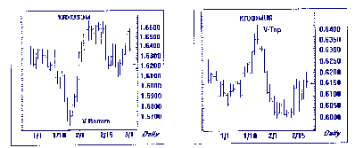 |
รูปแบบหัวกับไหล่ (HEAD & SHOULDERS)
แบ่งเป็น
หัวกับไหล่ที่จุดยอด (HEAD & SHOULDERS TOP)
บอกถึงการเปลี่ยนทิศทางของราคาหุ้นจากแนวโน้มขึ้นเป็นลง ประกอบด้วย 3 ยอด ยอดที่สูงที่สุดจะเรียกว่า
หัว (HEAD) ส่วนยอดที่ต่ำลงมาจะเรียกว่า ไหล่หรือบ่า
(SHOULDERS) โดยปริมาณการซื้อขายในแต่ละยอดจะลดลงตามลำดับ
และมีเส้นเชื่อมตรงฐานเรียกว่า เส้นคอ (NECKLINE) และเส้นนี้ไม่จำเป็นต้องเป็นแนวนอนเสมอไป
แต่ไม่ควรจะเป็นเส้นที่ชันมากเกินไปเช่นกัน เมื่อราคาหุ้นตกทะลุผ่านเส้นคอ
(NECKLINE) พร้อมกับปริมาณการซื้อขายที่สูงขึ้น แสดงให้เห็นว่าราคาจะมีแนวโน้มไปในทางลง
จึงควรขาย ณ จุดนี้
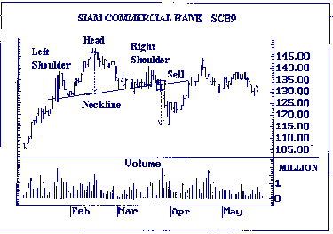 |
หัวกับไหล่ที่จุดต่ำ (HEAD & SHOULDER BOTTOMS)
มีลักษณะเหมือน HEAD & SHOULDER TOPS แต่กลับหัว และเมื่อราคาหุ้นทะลุผ่านเส้นคอ
(NECKLINE) พร้อมกับปริมาณการซื้อขายที่สูงขึ้น แสดงถึงแนวโน้มของราคาหุ้นกำลังจะขึ้น
จึงควรซื้อ ณ จุดนี้
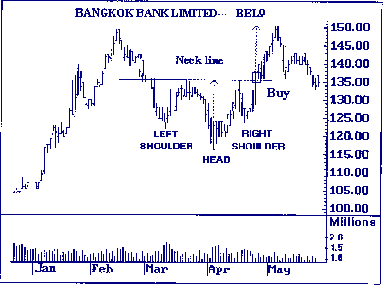 |
รูปแบบ สองหัวหรือสามหัวที่จุดต่ำ และสองหัวหรือสามหัวที่จุดยอด
(DOUBLE/TRIPLE BOTTOMS & DOUBLE/TRIPLE TOPS)
กรณีสองหัว (DOUBLE TOPS)
รูปแบบของราคาจะมีลักษณะคล้ายตัว M โดยจะมียอด 2 ยอดปริมาณการซื้อขายหุ้นในยอดแรก
จะมากกว่าปริมาณการซื้อขายหุ้นในยอดที่ 2 หลังจากนั้นราคาจะลดลงและทะลุผ่านเส้นคอลงไป
ซึ่งถือว่าเป็นจุดให้ขาย โดยระยะทางที่จะลงไปได้นั้นอาจจะลงไปได้อย่างน้อยเท่ากับระยะห่างระหว่างยอดถึงเส้นคอ
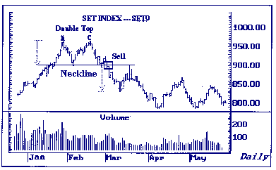 |
กรณีสามหัวที่จุดยอด (TRIPLE TOPS)
รูปแบบนี้จะมียอดอยู่ 3 ยอด โดยปริมาณการซื้อขายหุ้นจะลดลงในแต่ละยอดตามลำดับ โดยยอดแรกจะมีปริมาณการซื้อขายหุ้นมากที่สุด
และในยอดที่ 3 ขณะที่ราคากำลังลดลงและตัดเส้นคอ ปริมาณการซื้อขายหุ้นจะเพิ่มมากขึ้น
แสดงให้เห็นถึงสัญญาณเปลี่ยนแนวโน้มเป็นลง และควรขาย ณ จุดที่ราคาตัดเส้นคอลงมา
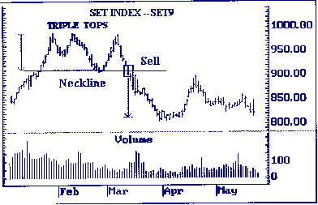 |
กรณีสองหัวที่จุดต่ำ (DOUBLE BOTTOMS)
รูปแบบคล้ายตัว W มีลักษณะในทางกลับกันกับกรณีสองหัวที่จุดยอด (DOUBLE TOPS) โดยกรณีสองหัวที่จุดต่ำ
(DOUBLE BOTTOMS) จะบอกถึงตลาดกำลังจะเปลี่ยนเป็นแนวโน้มขึ้น จึงควรซื้อ ณ จุดที่ราคาตัดเส้นคอ
(NECKLINE) ขึ้นมา
|
กรณีสามหัวที่จุดต่ำ (TRIPLE BOTTOMS)
มีลักษณะในทางกลับกันกับกรณีสามหัวที่จุดยอด (TRIPLE TOPS) โดยให้ซื้อเมื่อราคาตัดเส้นคอ
(NECKLINE) ขึ้นมา
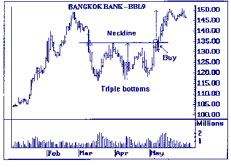 |
รูปแบบจาน
(THE ROUNDING TURN)
ราคาหุ้นจะก่อตัวคล้ายรูปจานโดยแบ่งเป็น
รูปแบบจานหงาย (ROUNDING BOTTOM)
มีลักษณะเป็นรูปครึ่งวงกลม ปริมาณการซื้อขายหุ้นจะลดลง แล้วจะเพิ่มขึ้นตามราคาหุ้นที่ขึ้น
บอกถึงแนวโน้มที่จะขึ้น
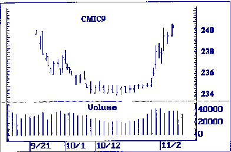 |
รูปแบบจานคว่ำ (ROUNDING Top)
มีลักษณะคล้ายจานคว่ำ บอกให้ทราบถึงว่าราคามีแนวโน้มจะลดลง
โดยมีลักษณะที่ปริมาณการซื้อขายหุ้นจะสูงขึ้นเมื่อราคาลดต่ำลง
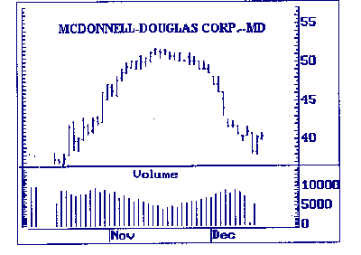 |
รูปแบบสามเหลี่ยมแบบปลายกว้าง
(BROADENING TRIANGLE)
มีลักษณะประกอบด้วยยอดสูง 3 ยอด โดยแต่ละยอดจะสูงกว่ายอดเดิม ในขณะที่เส้นเชื่อมของฐาน
2 ฐาน มีลักษณะเอียงลง โดยรูปแบบของราคามีการเริ่มต้นเป็นไปอย่างแคบ ๆ แล้วค่อย
ๆ ขยายตัวออกไป รูปแบบนี้จึงบอกถึงแนวโน้มการเปลี่ยนแปลงของราคาหุ้นจะรุนแรงมาก
ถ้าทะลุออกนอกเส้นสามเหลี่ยม ทางด้านบนหรือด้านล่าง แต่ส่วนมากจะมีการเปลี่ยนแปลงไปในทิศทางลงมากกว่า
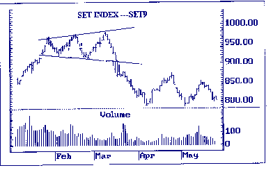 |
รูปแบบช่องว่าง
(GAP)
เกิดขึ้นเมื่อมีการซื้อหรือขายหุ้นโดยเกิดช่องว่างระหว่างราคาในลักษณะที่มีการกระโดดขึ้นหรือลง
โดยในช่วงแนวโน้มขาขึ้น (UPTREND) ช่องว่างจะเกิดขึ้นถ้าราคาต่ำสุดของวันปัจจุบันสูงกว่าราคาสูงสุด
ของ เมื่อวานในทางตรงกันข้าม ช่วงแนวโน้มขาลง (DOWNTREND) จะเกิดเมื่อราคาสูงสุดของวันปัจจุบันต่ำกว่าราคาต่ำสุดของวันก่อนหน้า
โดยรูปแบ่งช่องว่าง แบ่งเป็น
COMMON GAP
เกิดขึ้นในหุ้นที่ซื้อขายกันน้อยหรือขาดสภาพคล่อง ช่องว่างชนิดนี้ไม่มีความสำคัญ
เพราะไม่สามารถบอกทิศทางของราคาหุ้น
BREAKAWAY GAP
เกิดขึ้นเมื่อราคาหุ้นทะลุออกจากรูปแบบที่ก่อตัวมาครั้งก่อน เช่น การทะลุผ่านเส้นคอของรูปแบบ
HEAD & SHOULDERS โดยรูปแบบ BREAKAWAY GAP นี้เป็นการเริ่มต้นวิ่งของแนวโน้มใหม่
และควรจะเกิดพร้อมกับปริมาณการซื้อขายที่สูง
CONTINUATION/RUNAWAY GAP
เมื่อราคาวิ่งมาระดับหนึ่ง (โดยส่วนใหญ่จะประมาณครึ่งทางของแนวโน้มทั้งหมด) แล้วเกิดการกระโดดห่างออกจนเป็นช่องว่างจากราคาเดิม
โดยมีปริมารการซื้อขายปานกลาง จะเรียกว่า CONTINUATION GAP ดังนั้น เมื่อเห็น GAP
ชนิดนี้เกิดขึ้น เราอาจสันนิษฐานได้ว่าหลังจากนั้นราคาจะสามารถวิ่งต่อไปได้อีกเท่ากับระยะทางที่วิ่งมาแล้ว
EXHAUSTION GAP
เป็นการกระโดยขึ้นหรือลงของราคาครั้งสุดท้าย หลังจากนั้น ราคาหุ้นเริ่มปรับตัวลงหรือขึ้นจนมีระดับต่ำกว่าหรือสูงกว่า
GAP ครั้งก่อน (เป็นการปิด GAP) โดยปริมาณการซื้อขายหุ้นจะมีเข้ามาสูงมาก และอาจเกิดรูปแบบคล้ายคลึงกับเกาะ
(ISLAND) โดยการปิด GAP นี้นั้นจะเกิด GAP ใหม่ขึ้นมา หลังจากนั้นราคาจะเปลี่ยนแนวโน้มไปจากเดิมอย่างรวดเร็ว
ซึ่ง GAP ชนิดนี้หากเกิดภายหลังจาก BREAKAWAY GAP และ CONTINUTION GAP จะช่วยให้การวิเคราะห์น่าเชื่อถือยิ่งขึ้น
หมายเหตุ การจ่ายปันผล (XD) และการให้สิทธิผู้ถือหุ้นในการจองซื้อหุ้นเพิ่มทุน
(XR) ที่อาจก่อให้เกิด GAP จะไม่นำมาใช้ประโยชน์ในการวิเคราะห์แนวโน้ม
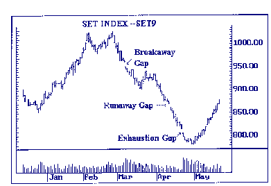 |
รูปแบบเกาะ
(ISLAND)
อาจเกิดขึ้นตรงจุดสูงสุดของรูปตัว V กลับหัว (ISLAND TOP) โดยมีลักษณะที่ราคาหุ้นจะขึ้นติดต่อกันเป็นระยะ
จนถึงจุดสูงสุด หลังจากนั้นราคาก็จะตกลงอย่างรุนแรง จนมีลักษณะแบบ BREAKAWAY GAP
ซึ่งรูปแบบนี้ปกติจะเกิดขึ้นต่อจาก EXHAUSTION GAP
ในทางกลับกันอาจเกิดขึ้นตรงจุดต่ำสุดของรูปตัว V (ISLAND BOTTOMS) โดยมีลักษณะที่ราคาหุ้นจะลงติดต่อกันเป็นระยะ
จนถึงจุดต่ำสุด หลังจากนั้นราคาจะขึ้นอย่างรุนแรง
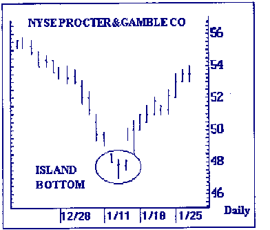 |
| << | 3 | >> |